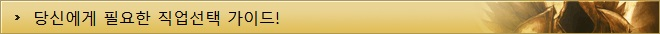
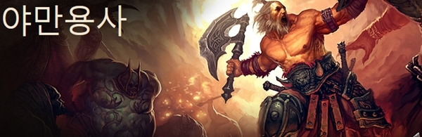
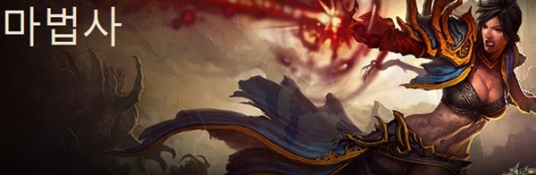
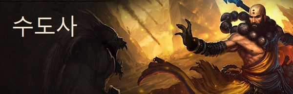
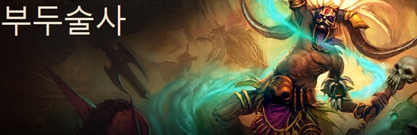
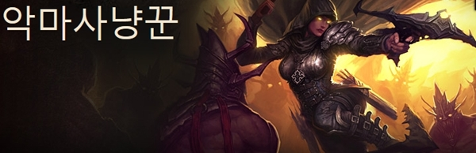
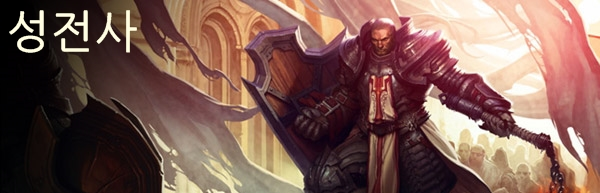
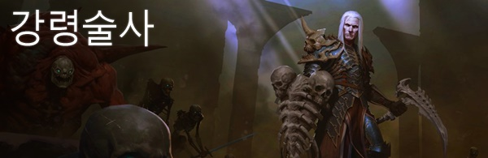

디아블로3 가이드
| 기초정보 | 인터페이스 | 단축키 | 퀘스트 |
|---|---|---|---|
| 제작 | 대장장이 | 보석공 | 점술가 |
| 기타 | 직업선택 | 지도 | |

디아블로3엔 총 7개의 직업이 등장합니다. 전작인 디아블로2에 등장한적이 있는 야만용사를 비롯해 신규 클래스인 마법사, 수도사, 부두술사, 악마사냥꾼, 성전사, 강령술사가 그 주인공들 입니다.
과연 이 7명의 영웅 중 나에게 가장 어울리는 직업은 무엇일까요? 또한, 각 직업들은 어떤 플레이 스타일과 기술을 갖고있을까요?
몰려오는 악마를 상대로 성역을 수호할 7명의 영웅! 각각 무엇인지 함께 살펴보시죠!

야만용사는 싸울수록 생성되는 분노를 바탕으로 휠윈드, 도약, 대지가르기 등의 기술을 사용해 악마들을 학살하며 전선의 최전방에서 싸우는 근접영웅입니다.
분노는 야만용사의 힘의 근원입니다. 분노를 생성하는 스킬을 사용해 적을 처치하거나 주변에 굴러다니는 항아리나 의자같은 오브젝트를 파괴하여 축적이 가능한 특징을 갖고 있습니다.
덧붙여, 분노는 피격시에도 일정부분 회복되는 특징을 갖고 있습니다. 따라서 적들이 몰려오면 몰려올 수록 야만용사의 분노는 빨리 차오르고 빠르게 수급되는 분노를 바탕으로 더욱 강력해지는 모습을 보입니다.

▼ 이런 분들께 추천합니다.
◆ 파티의 최전선에서 높은 방어력을 바탕으로 용감하게 싸우는 것을 좋아하시는 분
◆ 전작의 휠윈드를 잊지 못하는 분
◆ 넘치는 힘으로 모든것을 날려버리는 호쾌한 플레이를 선호하시는 분

마법사는 대기중에 존재하는 비전력을 바탕으로 운석 낙하, 눈보라 등의 원소마법과
붕괴, 마인화 등의 비전 마법을 사용해 전선의 후방에서 싸우는 원거리 마법 영웅입니다.
마법사의 전용 자원인 비전력의 가장 큰 장점은 빠르게 회복된다는 점에 있습니다.
다른 직업군이 자원을 생산하는 기술과 자원을 소모하는 기술이 나뉘어 있는 반면, 마법사는 그럴 필요없이 빠르게 자원이 차오르기 때문에 비전력 소모기술과 무료기술로만 기술의 카테고리가 나뉘여 있습니다.

▼ 이런 분들께 추천합니다.
◆ 파티의 최후방에서 강력한 화력지원을 좋아하시는 분
◆ 전작의 소서러스를 재미있게 플레이하셨던 분
◆ 고갈되지 않는 비전력을 바탕으로 끊임없이 마법을 난사하고 싶으신 분

수도사의 특수한 자원인 공력은 적들에게 큰 피해를 입히거나 아군의 생명력을 채우거나 아군이 받는 피해를 감소시켜주는 진언를 사용하는 등 다방면에 걸쳐 활용 가능한 자원입니다.
특히, 치유의 진언이나 내면의 성역같은 경우 위기에 빠진 파티원을 위험에서 구하는 디아블로 III 내의 몇안되는 파티 생존 기술로 수도사의 진정한 힘을 느낄 수 있는 기술들 입니다.

▼ 이런 분들께 추천합니다.
◆ 빠르게 연타하는 콤보 공격을 좋아하시는 분
◆ 전작의 팔라딘을 재미있게 플레이하셨던 분
◆ 파티의 힘을 강화시켜주고 체력을 회복시키는 등, 아군 강화효과를 사용하고 싶으신 분

좀비 돌진 등의 각종 소환수를 앞세우고 메뚜기떼, 맹독구름 등의
저주와 지속피해를 주는 기술로 상대를 제압하는 원거리 마법 영웅입니다.
마나는 부두술사가 기술을 사용하는데 필요한 자원입니다.
마나는 양이 많지만 빠르게 회복되지 않는 특성을 갖고 있어
부두술사는 소환 시에만 마나가 소모되며 소환되고 나선 죽기전까지 추가로 마나를 소모하지 않는
소환수들과 함께 전투를 수행합니다.

▼ 이런 분들께 추천합니다.
◆ 소환수를 앞세운 안전한 플레이를 선호하시는 분
◆ 전작의 네크로 맨서를 재미있게 플레이하셨던 분
◆ 각종 군중 제어기술을 바탕으로 적을 방해하는 플레이를 좋아하시는 분

다중사격, 속사 등의 원거리 기술로 전선의 후방에서 적을 제압하는 원거리 영웅입니다.
악마 사냥꾼이 사용하는 대부분의 공격 기술에 소모되는 자원인 증오는 빠르게 수급되는 특징을 갖고 있습니다.
증오는 하늘에서 화살의 비를 내리게 하는 화살의 복수와 한자루의 활에서 수십가닥의 화살을 쏘는 다중사격 등의 원거리 공격으로 소모하거나, 칼날부채, 수류탄 등의 근접 공격기술로도 활용할 수 있습니다.

▼ 이런 분들께 추천합니다.
◆ 먼거리에서 적이 접근하기도 전에 쓰러뜨리는 플레이를 선호하시는 분
◆ 전작의 아마존과 멀티샷(Multishot)을 잊지 못하시는 분
◆ 컨트롤을 많이 해야하는 캐릭터를 좋아하시는 분

성전사의 기본 자원인 진노는 진노 생성 기술을 사용할 때 외에 방패 방어에 성공하거나 적에게 피격 당했을 때, 다수의 적에 둘러쌓였을 때에도 생성되기 때문에 적의 공격을 자신에게 집중시켜서 광역 기술을 연사하거나, 생성되는 진노로 생존 기술을 사용하며 파티원들의 피해 기술이 집중될 수 있도록 돕는 역할을 하는 것이 좋습니다.
특히 조롱이나 심판은 상대방의 발을 묶고 공격을 자신에게 집중시킬 수 있는 기술이며, 이와 함께 용기의 율법을 통해서 파티원들의 지속-순간 피해량을 증대시킬 수 있습니다. 이외에도 광역 치유 기술인 신성화를 통해서 파티원들의 생명력도 회복시켜줄 수 있습니다.

▼ 이런 분들께 추천합니다.
◆ 강력하고 시원한 한방한방을 좋아하시는 분
◆ 전작의 팔라딘을 재미있게 플레이하셨던 분
◆ 파티의 선두에 서서 공격을 받아내고, 아군 강화 효과를 사용하고 싶으신 분


강령술사는 먼 거리에서 파괴적인 공격을 펼칠 수 있으며, 강령술사가 지휘하는 해골 병사들은 적이 공격을 시도하기도 전에 적을 압도하고, 강령술사의 끔찍한 저주는 강한 저항력을 지닌 악마조차 무력하게 만들 수 있습니다.
강령술사는 다양한 자원을 활용합니다. 정수(산 것과 죽은 것으로부터 수확한 에너지)를 불러들이고 사라져가는 시체의 생명력을 소환하며 자신의 체력까지 자원으로 사용합니다.

▼ 이런 분들께 추천합니다.
◆ 소환수를 부리는 플레이를 선호하시는 분
◆ 전작의 네크로맨서를 재미있게 플레이하셨던 분
◆ 피와 뼈, 시체를 이용한 강력한 기술을 사용하고 싶으신 분